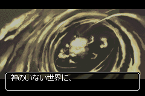
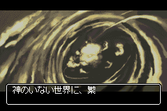

Monster Guardians (Japan)
SRAM 256K
Cartridge Identity
- Game Code
AMNJ(FamilyAMN)- Header Title
MONSTERGUARD- Maker / Revision
A4/ rev0- ROM Size
- 8.0 MiB (8,388,608 B)
- Save Media
SRAM 256K- SHA-256
5e9225a73f1f753f04446d8ed52ed80603d41de180531034175c30786d1c7c6f- Engine / SDK Group
comm-004(98 families)
Screenshots


Observed Battery Save Layout
- Fill Byte & Active Size
0x00fill · 12,356–12,356 / 32,768 B active (entropy 0.03 bits/B)- Active Offset Ranges
0x0–0x1D,0x4FDA–0x7FFF(2 total)- ASCII Magic / Headers
mobile21QRmobile21QRmobile21QR- Observed Variable Regions
- 0 bytes across 0 spans: None
- Candidate Checksum/Counter Spans
- None
ROM Assets, Compression & Audio
- BIOS Compression
- LZ77 (
0x10): 0 streams · RLE (0x30): 0 streams - ROM Pointer Tables
- 33 tables (0 pointing to validated compressed streams)
- SDK Backup Tags
SRAM_V110
Hardware MMIO Subsystems
save_bus_sram_flash0x805486c,0x8054918